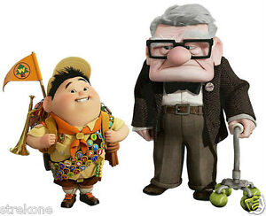

Também conhecida como Pixar Animation Studios, é uma empresa de animação digital norte-americana pertecente à The Walt Disney Company. É especializada em alta tecnologia de computação gráfica.
Site Oficial
Alguns dos Primeiros Filmes:
1995
Toy Story: É conhecido por ser o primeiro longa-metragem dos estúdios Pixar e também o primeiro da história do cinema totalmente feito por computação gráfica.
2001
Monstros S.A.: O filme conta a história sobre monstros que assustam crianças para conseguir seus gritos e gerar energia para seu mundo.
2003
Procurando Nemo: Vencedor do Oscar de Melhor Filme de Animação, apresenta um mundo onde peixes e outros seres marinhos vivem numa sociedade semelhante à de seres humanos.
2004
Os Incríveis: Foi indicado a 4 Oscars, e venceu 2: Melhor Filme de Animação e Melhor Edição de Som. Conta a história de Beto e Helena Pera, seres humanos dotados de super poderes, que se casaram e agora têm três filhos: Violeta, Flecha e o bebê Zezé, na cidade de Metroville.
2007
Ratatouille: Conta a história de Rémy, um rato vivendo em Paris que sonha em se tornar um chef de cozinha.
Grupo de Pesquisa Pixar
O Grupo de Pesquisa Pixar foi criado em 2004 com o propósito de:
- Desenvolver tecnologias
- Promover a inovação
- Fornecer consultoria
- Participar de comunidades de pesquisas externas
Alguns Filmes de Curta-Metragem da Pixar:
- Lou

- Piper

- Day & Night

- Air Mater
- Party Central

Galerias
Vídeos
Áudios
Imagens

WALL-E: Conta a história de um robô chamado WALL-E, criado no ano de 2100 para limpar a Terra coberta por lixo.

UP: Contas as aventuras que Carl (um idoso viúvo com seu sonho de se mudar para o magnífico Paraíso das Cachoeiras, na Venezuela) enfrenta ao conhecer Russel (um garoto escoteiro amante da natureza com seu sonho de protegê-la), Muntz (o explorador difamado buscando restabelecer sua reputação), Kevin (a ave tropical) e Dug (um golden retriever falante).

VALENTE: Merida é uma habilidosa arqueira e a impetuosa filha do Rei Fergus e da Rainha Elinor. Determinada a trilhar o seu próprio destino, Merida desafia um costume ancestral, se negando a casar com o primogênito de um dos quatro clãs.
Topo